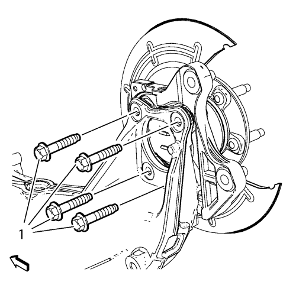

Sustitución de la chapa de recubrimiento del freno trasero
Herramientas especiales
EN 45059 Medidor de ángulos
Procedimiento de desmontaje
- Elevar el vehículo y soportarlo de manera adecuada. Consultar Elevación del vehículo con un gato .
- Desmonte la rueda del vehículo. Consultar Desmontaje y montaje de la rueda y el neumático .
- Desmontar el disco de freno. Consultar Sustitución del rotor de freno trasero .

Atención: Sujete las pinzas de freno con alambre mecánico fuerte o equivalente cuando se separen del montaje y aún esté conectado el tubo flexible de freno hidráulico. Si no se sujetan las pinzas de esta manera, el tubo flexible de freno tendrá que soportar el peso de las pinzas, lo que puede provocar que se dañe el tubo flexible de freno y esto, a su vez, puede provocar una fuga de líquido de frenos.
- Desmonte el perno del sensor de velocidad de la rueda (1).
- Desmonte el sensor de velocidad de la rueda (2).

- Desmonte los pernos de montaje del cojinete/cubo de la rueda (1).

- Desmonte el conjunto cojinete/cubo de la rueda (2) y la chapa de recubrimiento de frenos trasera (1) de la mangueta.
Procedimiento de montaje
- Coloque la chapa de recubrimiento de frenos traseros (1) y el conjunto de cojinete/cubo de la rueda (2) en la mangueta.
Precaución: Consulte Precaución con las fijaciones en la sección Prólogo
- Monte los pernos de montaje del cojinete/cubo de la rueda (1) y apriete a 50 N·m (37 lib. pie) +30°, usando el metro EN 45059.
- Monte el sensor de velocidad de la rueda (2).
- Monte el perno del sensor de velocidad de la rueda (1) y apriételo hasta 6 N·m (54 lib. pulg.).
- Montar el disco de freno. Consultar Sustitución del rotor de freno trasero .
- Monte el conjunto de neumático y llanta. Consultar Desmontaje y montaje de la rueda y el neumático .
- Bajar el vehículo.
| © Copyright Chevrolet. All rights reserved |